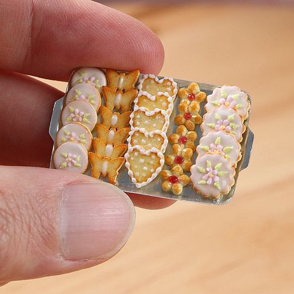

@ Tiny Food
Tiny food or Miniature food is a kind of replica of food in a much-smaller-than-usual size. In 2014, a Youtube Channel, Miniature Space, started producing videos that showcased the makings of a variety of miniature meals and dishes prepared with tiny utensils. It established a fanatical trend of miniature food in Japan, then onward toward becoming a worldwide trend. Nowadays, miniature food does not just appear as toys or accessories, but edible food as well. The 'Tiny Food' Twitter account has 429,000 followers.
I love tiny food because most quickly comes to my mind upon seeing these picture are childhood memories of doll houses. Tiny food seems to tap into a nostalgia for the past, and an aspect of play that is most often largely forgotten during adulthood.
Ice Cream
Cake
Cookies

Sushi